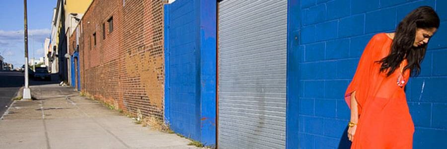

Sartre's List Better Dressed People
On the Street in Brooklyn

A man accused of detonating an explosive in the New York City subway system this morning had the bomb strapped to him while he rode in from Brooklyn to Manhattan before the attack, a law enforcement source said.The explosion occurred in an underground passageway near the Port Authority Bus Terminal, sending commuters scrambling to evacuate a major transit hub just blocks from Times Square. Despite the rush-hour crowds, only five people suffered minor injuries, officials said.
New York Gov. Andrew Cuomo called the underground explosion “one of our worst nightmares.” New York City Mayor Bill de Blasio called it an "attempted terrorist attack. Continue..."
Authorities called the homemade device an "improvised low-tech explosive" that was attached to the suspect with hook-and-loop fasteners and zip ties.
A law enforcement source said the bomb was built from a 12-inch-long pipe, black powder and rigged with a 9-volt battery and a wire that came from a Christmas light. Because it was strapped to the suspect, the assumption is he had been prepared to die a suicide bomber, the source said. The pipe had nails stuffed into it, the source said, and it had the ability to impose more injuries than it did. More...

The 27-year-old suspect, Akayed Ullah, is in the hospital, badly injured in the arm and torso from the device that went off in his arms, sources said. Ullah, originally from Bangladesh, told authorities he is self-inspired from ISIS online propaganda, sources said. Ullah told authorities no one directed him to carry out the attack and he talked about the plight of Muslims over the years, a law enforcement source said.
Ullah entered the United States from Bangladesh seven years ago on a family-based visa and has an address in Brooklyn, sources said. The explosive was assembled in his apartment, sources said.

Populate posts
- Ten things not to wear on Red carpet
- Valahalla at Met Gala
- Jeans: to Fray or not to Fray
- "Trashion" is in this season
- Back to school in Pencil shirts
- Fall seacon preview
- Even more ways to scrap a Sari!
- Is Steve Punk here to Stay?
- Neighhoodie watch
- Hair Styles of the Damned